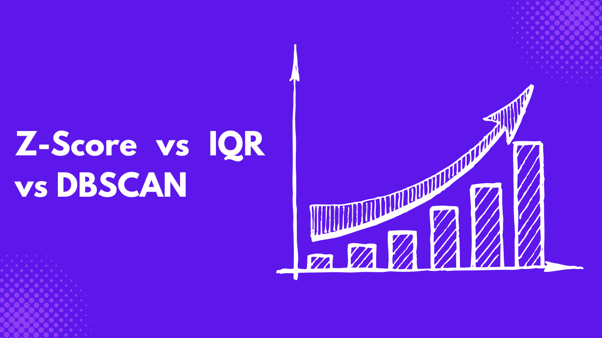

Let’s say the mathematics test results for 10 students are 2, 5, 6, 3, 4, 15, 5, 4, 3, 5, on a scale of 15. Looking at the score closely, you will notice that a particular student had a perfect score of 15, although the test performance was low. This kind of situation happens in data and is usually called outliers.
Outliers are extreme values that can affect our data in various ways. For example, the student scoring fifteen or above will inflate the average score when calculated.
This is why it’s important to detect outliers when working with data. This article will teach you various outlier detection methods, use cases, pros and cons, and the right method to select when facing one.
Understanding Outliers
Outliers can result from measurement errors or data variability. Their presence can skew statistical measures like the mean and standard deviation, affect model accuracy, lead to biased parameter estimates, or indicate important events such as fraud detection.
There are various types of outliers:
- Global Outliers (Point Anomalies): These data points significantly deviate from the rest of the dataset. For example, a person with a height of 2.5 meters in a general population dataset.
- Contextual Outliers (Conditional Anomalies): These data points are called outliers in a specific context. An example is a temperature of 20°C, which is normal in spring but abnormal in winter.
- Collective Outiers: These are a group of data points that collectively deviate from expected patterns, though individual points may not appear unusual. For example, if many requests suddenly come from the same IP address in a short time frame, it could indicate a bot attack.
Outlier detection is necessary as it can provide more insights depending on the data type you are working with, such as fraud detection, medical diagnosis, network security, etc.
It’s also important to clean and process the data before applying statistical or machine learning models, as most models are sensitive to outliers. This ensures that the results are reliable and accurate.
Z-Score Method
The Z-score, also known as the standard score, measures how deviated a value is from the mean(\(\mu\)) of a dataset. It compares individual data points to the overall distribution and determines how unusual a value is within a dataset.
On the other hand, the standard deviation(\(\sigma\)) is a measure of the dispersion or spread of a set of values. The formula for the Z-score is given as
\[ Z = \frac{X-\mu}{\sigma} \]
Where:
- Z is the Z-score
- X is the individual data point
- \(\mu\) is the mean of the dataset
- \(\sigma\) is the standard deviation of the dataset.
Here are the possible ways to interpret the Z-score:
- If a point has a Z-score of 0, the data point is exactly at the mean.
- If the Z-score is positive, the value is above the mean. For example, a Z-score of 2 means the data point is 2 standard deviations above the mean
- If the Z-score is negative, the value is below the mean. For example, a Z-score of -1.5 means the data point is 1.5 standard deviations below the mean.
The Z-score works best when the sample size is large and is sensitive to unusual high or low values. It is mostly used in testing statistical hypotheses, confidence intervals, and regression analysis.
It also standardizes a variable, allowing for comparison regarding its measurement. For example, using their Z-score, you can compare two weight variables measured in pounds and kilograms.
The table below gives the pros and cons of the Z-score.
| Pros | Cons |
|---|---|
| Easy to compare values from different datasets. | |
| Helps detects anomalies in the data. | Extreme value can distort mean and standard deviation, which are needed to calculate the Z-score. |
| Most effective with normally distributed data. | Not useful for skewed or non-normal distributions, because it assumes normality. |
| Useful for probability calculations. | Statistical knowledge needed for interpretation. |
Interquartile Range (IQR) Method
The IQR is a measure of spread that captures the middle 50% of a dataset. It helps detect outliers, and the boxplot is one of the best visualizations for explaining the IQR in a dataset.
The boxplot is a visual representation of the distribution of a variable, and it uses five key statistics.
- Minimum (excluding outliers)
- First quartile (Q1) - 25th percentile (lower quartile)
- Median (Q2) - 50th percentile (middle value)
- Third quartile (Q3) - 75th percentile (upper quartile)
- Maximum (excluding outliers)
It’s important to know that outliers are often represented as points outside the whiskers of the boxplot. The formula for the IQR is given as
\[ IQR = Q3 - Q1 \]
Here are the steps to follow to find outliers in your dataset using the IQR:
- Sort the dataset in ascending order.
- Find Q1 and Q3
- Calculate IQR
- Compute the lower and upper bound levels using the following formula.
\[ Lower Bound = Q1 - 1.5*IQR \]
\[ Upper Bound = Q3 +1.5*IQR \]
- Identify outliers as data points not in the range between the lower and upper bound [Lower Bound, Upper Bound].
The IQR works well when the sample size is small, and the data is skewed. Here is a table showing the pros and cons of IQR:
| Pros | Cons |
|---|---|
| Not sensitive to extreme values. | Ignore the spread between Q1 and Q3, hence not capturing the full data distribution. |
| Works well with skewed data. | You can’t use it with normally distributed data. |
| Easy to interpret. | In small datsets, IQR might misclassify important values. |
DBSCAN (Density-Based Spatial Clustering of Applications with Noise)
DBSCAN is a density-based clustering algorithm that groups data points based on their density. This makes it effective for identifying clusters of varying shapes and sizes and detecting outliers. DBSCAN groups data based on two parameters:
- Epsilon (\(\epsilon\) ): The radius within which points are considered neighbors.
- MinPts (Minimum Points): The minimum number of points required within \(\epsilon\) to form a dense region, that is, a cluster.
DBSCAN classifies points into three categories:
- Core Points: Points with at least MinPts neighbors within distance \(\epsilon\).
- Border Points: Points with fewer than MinPts but within \(\epsilon\) of a core point.
- Noise (Outliers): Points that do not belong to any cluster and are not close enough to a core point.
The image below explains the concept above:

Core points (blue) form the center of clusters, border points (orange) are on the edges of clusters, and noise points (red) are isolated.
DBSCAN identifies outliers as points that do not have enough neighboring points within to be core points. They are also unreachable from any other core point, existing in sparse regions with low density to form a cluster.
Since DBSCAN does not force any point into a cluster, it naturally detects anomalies that don’t belong to any dense region.
DBSCAN is particularly useful in spatial analysis. It can identify high-density areas such as traffic congestion zones and detect anomalies such as unusual weather patterns.
Here are the pros and cons of using DBSCAN.
| Pros | Cons |
|---|---|
| Can detect clusters of irregular shapes. | If clusters have varying densities, a single epsilon may not caputre all clusters accurately. |
| Determines the number of clusters automatically. | Sensitive to the epsilon and MinPts parameters, which if selected poorly can lead to incorrect clustering. |
| Efficient when the sample size is large. | Performs poorly in high-dimensional spaces due to the curse of dimensionality. |
Comparative Analysis
The table below compares the three outlier detection methods and the best scenario for using them.
| Z-Score | IQR | DBSCAN |
|---|---|---|
| Measures how many standard deviations a point is from the mean. | Identifies outliers based on the spread of the middle 50% of the data. | Detects outliers as noise points in low-density regions. |
| Statistical method | Statistical Method | Density-Based clustering |
| Best suited for normally distributed data. | Best suited for non-parametric data. | Best suited for non-linear distributions with varying densitiies. |
| Suitable for small and medium datasets. | Works well for small datasets. | Best for large, complex, and high-dimensional datasets. |
| Does not consider clusters. | Does not consider clusters. | Detects noise points as outliers based on density. |
| Use in financial fraud detection, and quality control. | Used in boxplot-based analysis like medical and biological data. | Used in anomaly detection in spatial or high-dimensional data. |
Practical Examples
Here are some case studies of how these outlier methods are applied in real life.
Example 1: Financial Fraud Detection (Z-Score)
A bank wants to detect fraudulent transactions based on transaction amounts. The Z-score method is applied since the transaction amounts typically follow a normal distribution.
Transactions with a Z-score >3 or < -3 are flagged as potential fraud; hence, several high-value fraudulent transactions are detected.
Example 2: Medical research on patient heights (IQR)
Medical research analyzes height data to study growth patterns since the heights are often skewed. IQR is used to detect extremely short or tall patients
Heights outside \([Q1-1.5*IQR, Q3+1.5*IQR]\) are flagged as outliers, and patients with these extreme values are now identified for further analysis.
Example 3: Anomaly detection in GPS data (DBSCAN)
A logistics company wants to identify erratic vehicle movement patterns. The GPS locations are clustered using DBSCAN, where vehicles that do not belong to any dense cluster are labeled anomalies. This ensures that vehicles deviating from usual routes are detected, helping identify potential theft or route violations.
Conclusion
Even though most statistical analyses are sensitive to outliers, outliers can significantly give you information about a variable in your dataset.
This article has explained how to handle an outlier in your dataset using the three methods discussed: Z-score, IQR, and DBSCAN. Each method has its pros and cons, and deciding which one to use depends on the nature of your dataset.
If you are looking for dirty datasets to practice on, you can create one using the Chaos web application that allows you to introduce various dirtiness into your dataset.
Here are other tutorials also on outliers and data cleaning that you should find resourceful:
- Types of Missing Data: MCAR, MAR, and MNAR Explained
- A Guide to the DBSCAN Clustering Algorithm
- DBSCAN Clustering in R Programming
- Interquartile Range and Quartile Deviation using NumPy and SciPy
- Calculate the Interquartile Range in R Programming – IQR() Function
- How to find z score in R-Easy Calculation-Quick Guide
- How to Calculate Z-Scores in Python
Need Help with Data? Let’s Make It Simple.
At LearnData.xyz, we’re here to help you solve tough data challenges and make sense of your numbers. Whether you need custom data science solutions or hands-on training to upskill your team, we’ve got your back.
📧 Shoot us an email at admin@learndata.xyz—let’s chat about how we can help you make smarter decisions with your data.